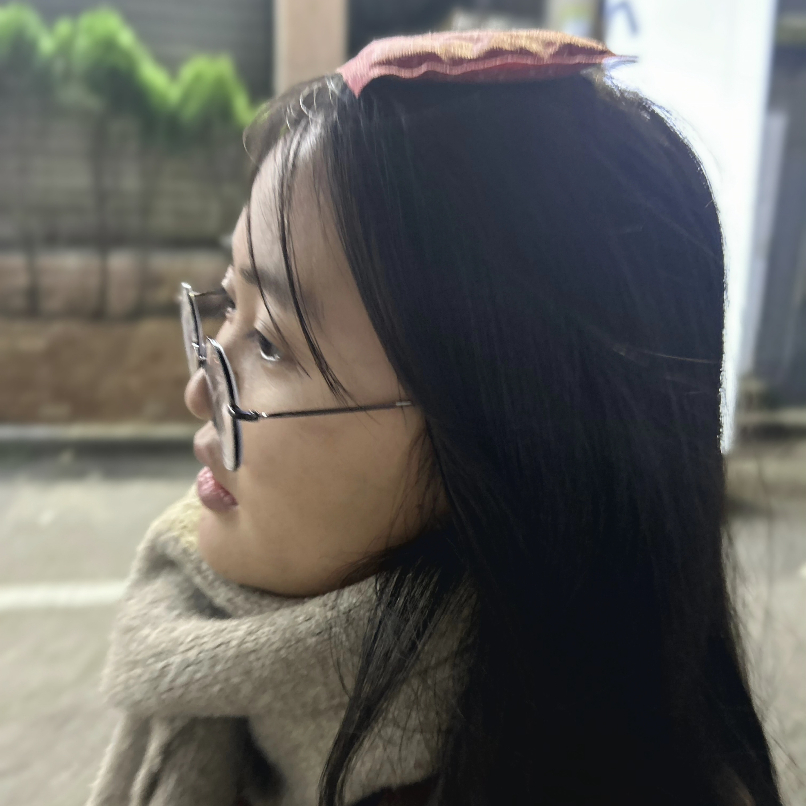
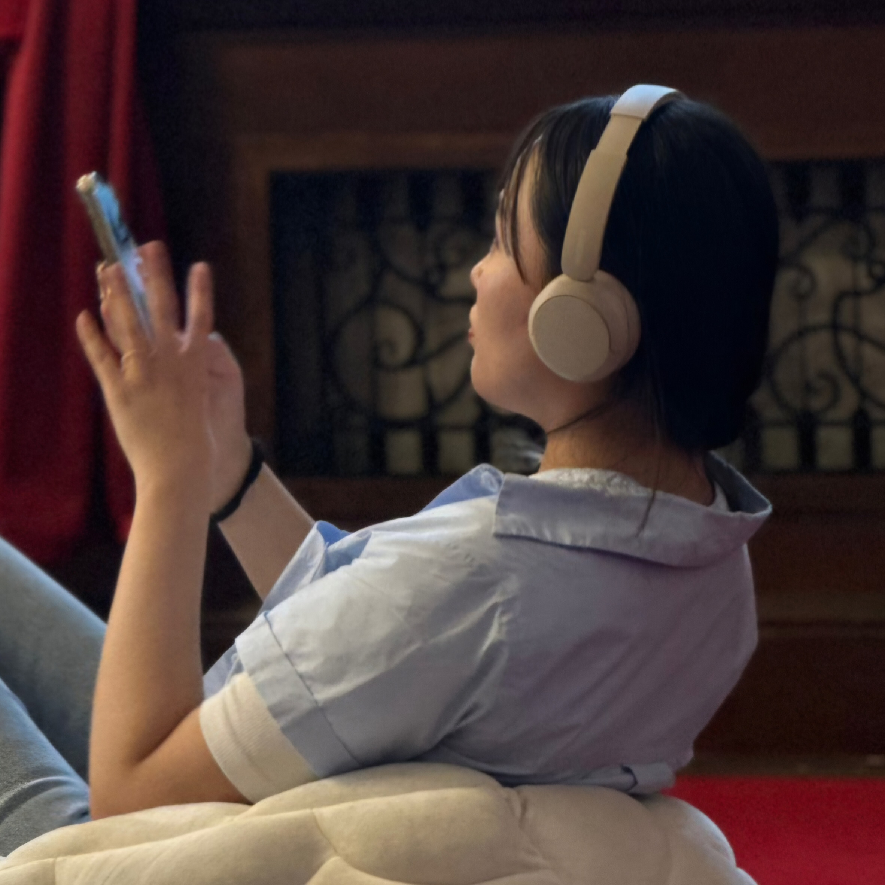
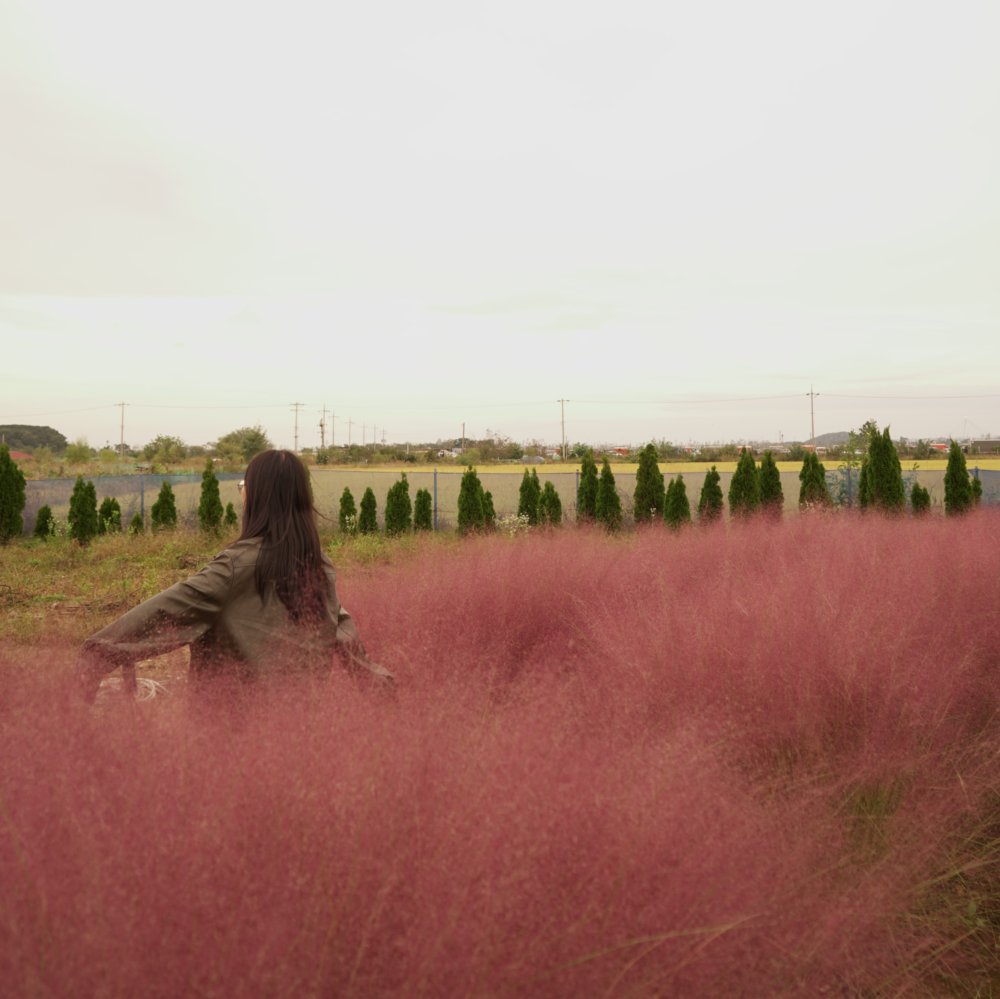

자기소개
안녕하세요, 정시진입니다. 저는 어떤 일이든 최선을 다해 몰입하며,
사소한 디테일 하나에도 진심을 다합니다. 때론 지치기도 하지만,
꼼꼼하고 성실하게 끝까지 파고드는 저의 집념이 신뢰할 수 있는
결과와 가치를 만드는 강점이라 생각합니다.

성향 & 성격
저는 따뜻하고 정중한 태도로 사람들과 소통해요. 아기자기하고
감성적인 것에 마음이 끌리며, 일상에서 소소한 아름다움을 발견하는 걸
좋아합니다. 늘 솔직함과 열린 마음으로 세상을 바라보고 싶어요.

현재의 나
저는 디지털미디어디자인과에서 세부 분야 하나하나를 배워가는 과정이
흥미롭습니다. 특히 영상과 3D 디자인에 깊은 흥미가 있고,
여행을 통해 새로운 경험을 얻으며 성장하는 순간을 소중하게 생각합니다.